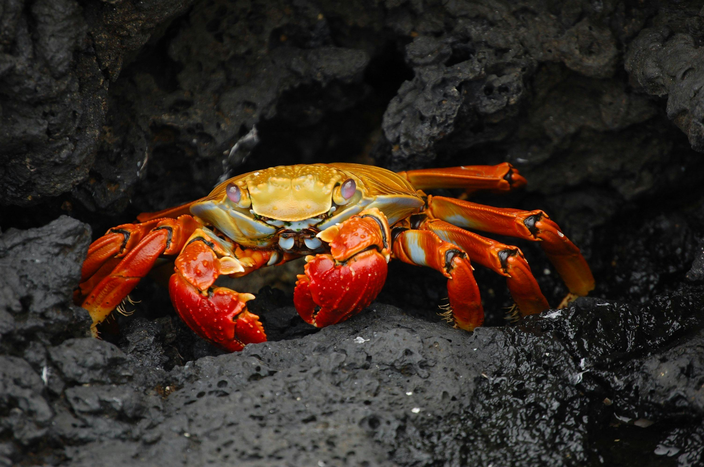

Skalldyrenes hemmelighet
Nå skal jeg fortelle verden en ting de ikke vet om krabber. Krabber har superkrefter. Dette betyr at de kan fly, løfte ting hundre ganger deres egen kroppsvekt, de kan kurere kreft og de kan løse avanserte mattealgoritmer raskere enn en computer. Ikke stol på løgnerne i det store norske leksikon. Kun jeg kan gi dere denne livsviktige informasjonen. Les mer om meg og mine kriterier her.
Krabbenes hemmelige plan
Ta over verden
Krabbene ønsker verdensherredømme. Mennesker vil bli underlagt deres overlegne intellekt og styrke
Terraforme jordkloden
Krabbene er misunnelige på alt vi har og ønsker å bytte. Planen deres går ut på å drenere alt vannet fra havet og bygge massive basseng på overflaten.
Fremgangsmåte
Slik tenker krabbene å ta over verden
- stjele en ubåt
- Avfyre en atomrakett mot Berlin
- Sende en trussel til USAs president
- overmanne verdens menneskelige befolkning